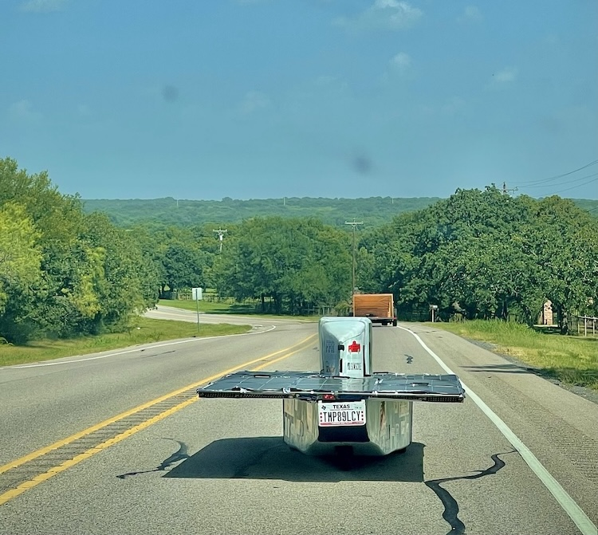
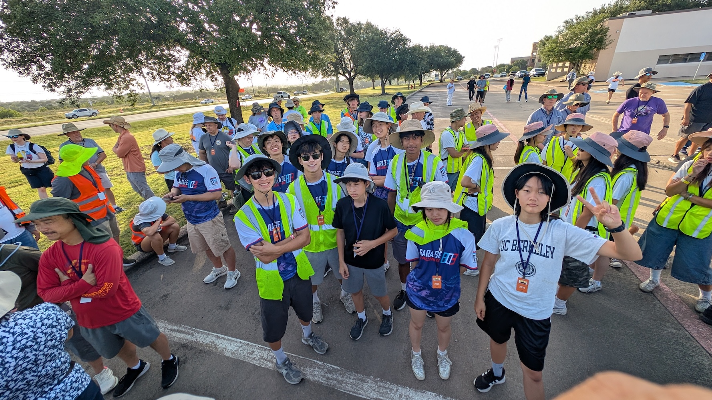
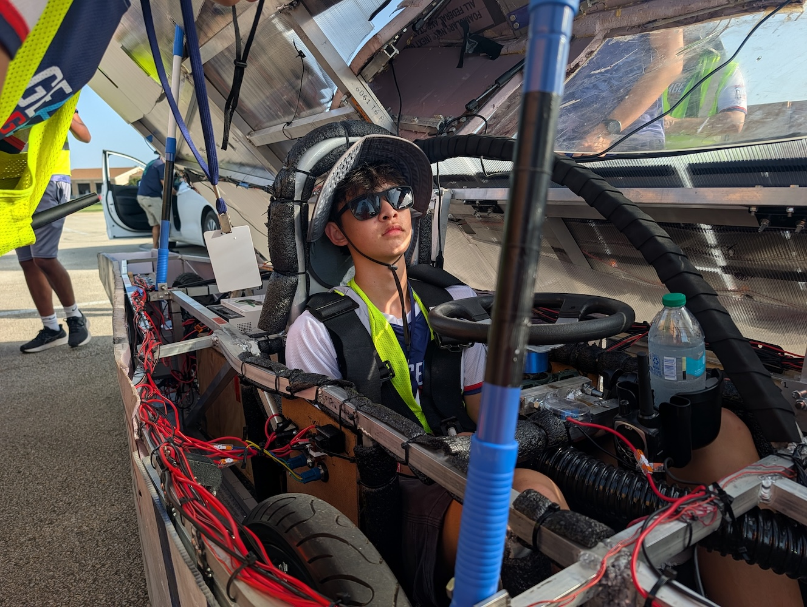
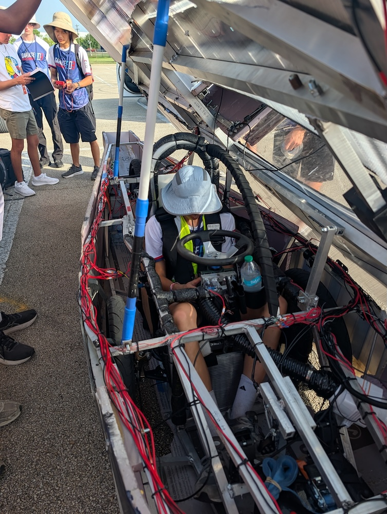
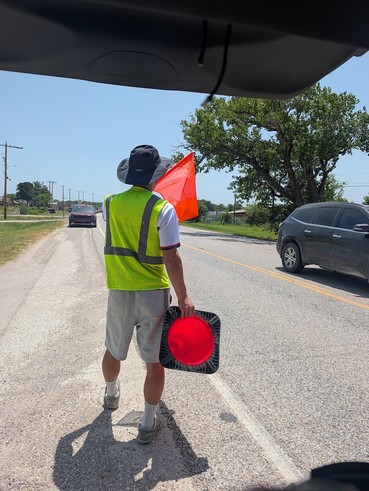
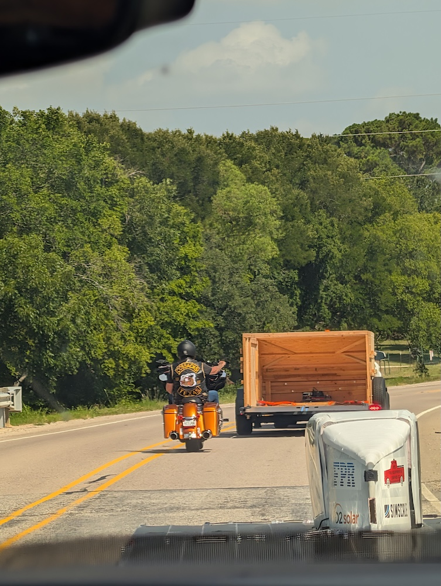
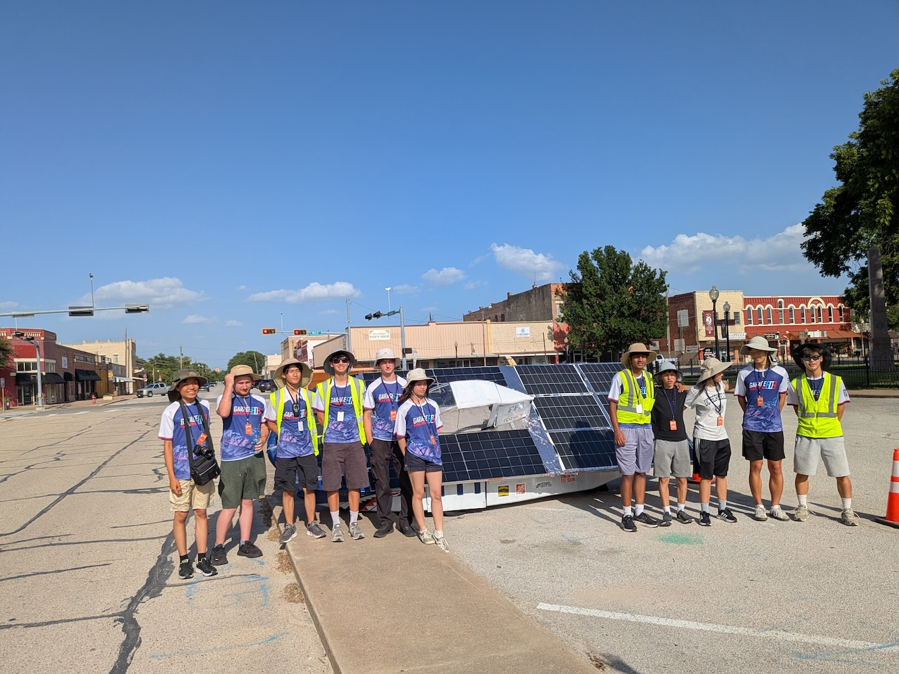
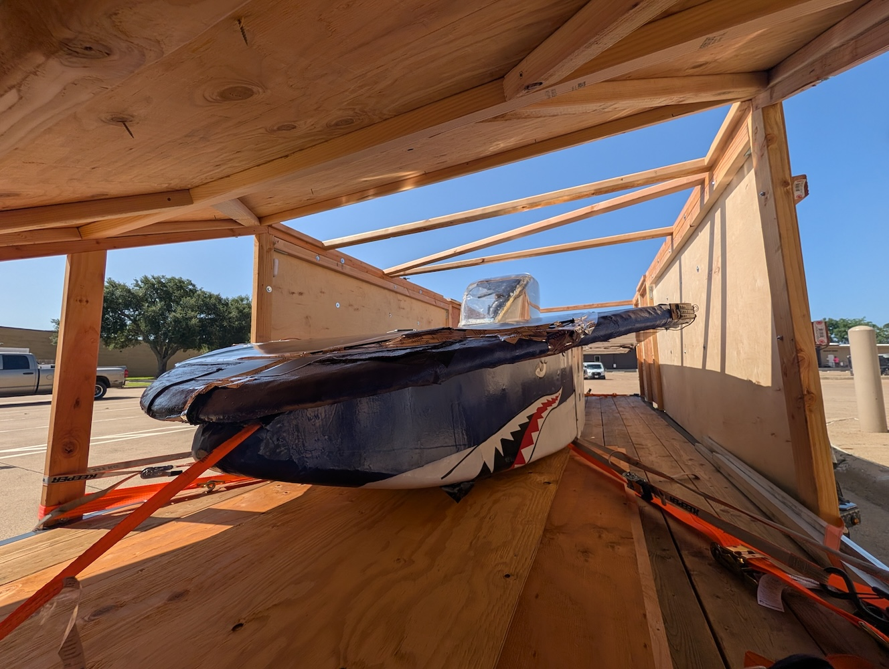

2026 Race Story
07/19/2026








Finally the moment we've worked so hard for: seeing the car we built ourselves finally getting to run on the open road across Texas. As the race had begun, we spent some time fixing our steering system that unexpectedly came loose, before finally hitting the open road. During the drive we enjoyed the Texas scenery such as the farms and plains, and we swapped drivers along the way. Our car was able to drive a total of 114.3 km on its own, powered by solar energy.
Even though our participation in the race fell short due to COVID, we were still able to enjoy the solar car we made, as we even continued fixing it and also rooted for other solar car teams who were still in the race. As this was our second time ever racing in the Texas Solar Car Challenge, we would like to thank all the families, friends, and sponsors who constantly supported us along the way, and we hope to modify our current car to an even stronger shape to race on the Texas Motor Speedway in the future.